Expandable Boxes
< click this icon
this box is expandable
but it has not been expanded yet. (probably) The Purple boxes can always be expanded when clicked, (unless I forgot) some can look expanded by default but actually just have multi-line titles. (in other words their just really tall when unexpanded too) also theres a dark mode button in the top leftBest way to tell if it can be expanded is to look for the arrow next to the title
All links should be clickable, they should go to either external sites or headings.
name: Investigation
filter: "search: Investigation 2"Context
The Task
You are required to investigate the process of purchasing a car for personal use, and selling it after 5 years for an appropriate amount that you decide. You are approved for a loan of $30,000, and you should assume you have an appropriate income for a school/university student.
To complete this investigation, you must: 1. “Purchase” a car by taking a loan of $30,000, showing research and information on all initial complementary expenses (insurance, tax etc) 2. Use your understanding of the ATMAA Financial maths topic in your report. All mathematics must be shown, using screenshots of your classpad or showing working out. Online calculators will not be sufficient. 3. Present your findings in a written report and include all steps of the Mathematical Investigation Process. This also includes discussion and justification of the decisions and assumptions you made.
Instructions
Instructions:
- This investigation consists of a Take Home section only. There will be no validation test.
- You will be required to undertake a statistical investigation using the mathematical investigation process and present your findings in a report.
- You may discuss your investigation with others, but your data, analysis and report must be your own work.
- You may use the Internet as an additional resource.
- Ask your teacher for guidance on the Mathematical Investigation Process if necessary.
- Your report is due on Wednesday 23 August 2023 and must be submitted via Turnitin on Seqta.
Working
Introduction
In this investigation, I will investigate the process of purchasing a car from the context of the average School/University Student, using it for 5 years, then selling it. Context includes;
- Approval for a loan up to $30,000.
- Income slightly above Minimum wage. ($24.27 per hour)
- Operates under WA Laws & Regulations.
- Am to-be enrolled in a Full-time University exactly 1 year into the loan.
- Thus, reduction in Income as there is less time to work. I will investigate how a Uni student can keep up with the loan, taking into account all complementary expenses (Insurance, tax, Fuel Costs, Living Costs etc.), Comparing Mutliple different loans in the context of different vehicles in an attempt to get the best deal out of the options available to me. `
Income
I will calculate income weekly, this allows me to include any benefits that re-occur on a weekly basis, that primarily being Penalty Payments, for hours worked on Saturday, I get 150% of my base Income, and on Sundays I earn 200% of my base income. I will assume that I am taking a gap year for the first year, following that hours will be restricted to the weekend, and 4 hours on fridays.
Year 1 - Hours
| Day | Hours | Penalty Rate |
|---|---|---|
| Monday | 4h | 100% |
| Tuesday | 4h | 100% |
| Wednesday | 8h | 100% |
| Friday | 4h | 100% |
| Weekdays Total | 20h | 100% |
| Saturday | 6h | 150% |
| Sunday | 0h | 200% |
Year 2, 3, 4, & 5 Hours
| Day | Hours | Penalty Rate |
|---|---|---|
| Friday | 4h | 100% |
| Saturday | 4h | 150% |
| Sunday | 8h | 200% |
Modelling Income Mathematically
I can model my income with the following equation: Where; = Hourly Salary = Hours worked at that rate = Pay-rate (e.g. 150% > 1.5) W = Weekly Income I will also be taking into account the national Wage Growth, according to the Australian Bureau of Statistics, wage growth is currently averaging 3.6% Per Year , thus we can expect, that on average, my wage will increase by 3.6% year on year.
Since after the first year I am drastically decreasing my hours as I would move into University, I will calculate this 3.6% based on my current hourly wage. After the first year, I can model it as a geometric sequence using the weekly Wage, simply assuming hours remain constant from there on.
We now calculate the Hourly wage, after growth, after a year; \boxed{\25.14}=25.143 = 24.27 \times 1.036 Which can be used in the Year 2 Calculation, alongside Year 2 Hours $$W_2=\boxed{\653.64}=(25.14 \times 4) + (25.14 \times 1.5 \times 4)+(25.14 \times 2 \times 8)W_{y+1}=W_y \times 1.036, \quad W_2=653.64$$ Where . I provided because you can not use this sequence from since that year has another factor influencing it. In the classpad I simply used , where , and so on.
Classpad Working out
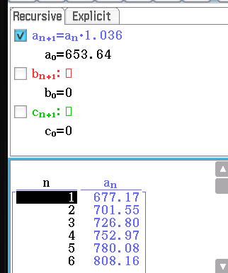
| Year (Y) | Weekly Income ($AU) |
|---|---|
| 1 | 703.83 |
| 2 | 653.64 |
| 3 | \boxed{\677.171}=W_3$ |
| 4 | \boxed{\701.549}=W_4$ |
| 5 | \boxed{\726.804}=W_5$ |
Representing Wage Growth Explicitly
Here is the same thing representated as an Explicit Geomtric Sequence: where , and .
Yearly Income After Tax
I now define a equation to model my Post-Tax Income; Then;
I won’t utilise this equation until the end, throughout the rest of the report I will keep a number of weekly expenses, that I will then add on at the end.
Cost of Living
Now we must adjust these values for the cost of living, I utilised the government provided living cost estimator, excluding the accomodation option as the average Uni student is living with their parents, or has accomodation provided for them by their parents. Thus;
Weekly Expenses: 220
I also excluded Transport as that is a factor dependant on fuel economy of the vehicle, something that will be discussed in detail later.
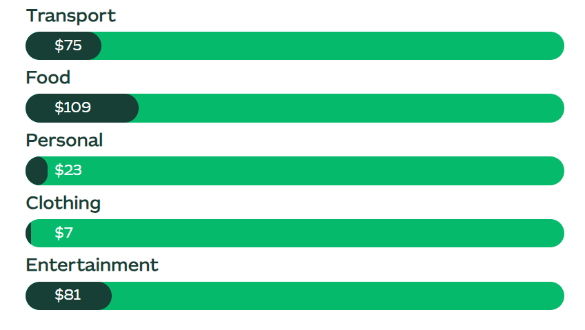
Archive
| Year (Y) | Weekly Income ($AU) |
|---|---|
| 1 | |
| 2 | |
| 3 | \677.171 - 220 = \boxed{457.171}$ |
| 4 | \701.549 - 220 = \boxed{481.549}$ |
| 5 | \726.804 - 220 = \boxed{506.804}$ |
Data Collection - Cars & Banks
Plan
The Plan is to collect all the relevant data into seperate notes, this allows me to include bank specific information alongside each one. I will include each relevant offer in a sperate Entry, e.g.
- Beyond Bank (Low Rate Loan)
- Beyond Bank (Special Offer)
This allows me to seperate out the requirements for each loan, for example the special offer is only relevant for cars less than two years old, where as the Low Rate Loan, wihle a higher rate, can have any car sold within the last 8 years as a security, or no security at all.
One advantage of this approach is that once I have decided on my car, I can run calculations for all loans, determien which ones are theoretically the best, then eliminate the ones that choice of car or I, am inelligble for, With a wide variety of Cars & Loans I can determine the absolute best choices for both.
Data
Data in these tables are links to other notes, these links do not work. However some relevant metadata from them is shown in the table
Collected Banks Data
let pages = dv.pages('"Maths/Unit 3/Finance/Banks"')
dv.table(
["Bank", "Fixed Compar.", "Max Age"],
pages.map(b => [
b.file.link,
`**${b.FixedComparison}**`,
b.MaxFixedAge
])
)Note: All Banks compound daily.
NAB is different
The NAB loan listed here is Variable, since the dataview query above only includes Fixed. Here it is;
let pages = dv.pages(‘“Maths/Unit 3/Finance/Banks/NAB”’)
dv.table(
[“Bank”, “Variable Compar.”, “Max Age”],
pages.map(b => [
b.file.link,
**${b.VariableComparison}**,
b.MaxVariableAge
])
)
Collected Cars Data
function calculateTotalAmount(principal, interestRate, years, compoundsperyear) {
// Convert interest rate to decimal and get the daily interest rate
let decimalInterestRate = interestRate / 100;
let dailyInterestRate = decimalInterestRate / 365;
// Calculate the number of compounds in total over the entire loan
let compounds = years * compoundsperyear;
// Calculate the compound factor
let compoundFactor = Math.pow(1 + dailyInterestRate, compounds);5
// Calculate the total amount to be paid
let totalAmount = principal * compoundFactor;
return totalAmount.toFixed(2); // Round to two decimal places
}
function notgonnawork(principal, interestRate, years, compoundsperyear, Payment, PaymentsPerYear) {
let i = 0
let Price = principal
let ActualPayment = Payment / 12
let ActualRate = 1 + (interestRate / 100) / compoundsperyear
while (i < (compoundsperyear*years) ) {
let Value = Price * ActualRate
Price = Value
i++
}
console.log(Price)
return Price.toFixed(2);
}
let pages = dv.pages('"Maths/Unit 3/Finance/Cars"')
dv.table(
[
"Car", "Price", "Age"
],
pages.map(c =>
[
c.file.link, c.Price, c.Age
])
)Comparing Loans
Loans have two defining characteristics, their Interest Rate, and their Vehicle Age Limit, usually we’d define a better loan as one which has a lower interest rate as that means we pay less Interest, however the Age Limit presents a complexity. As a result of the diminishing depreciation on cars, Older cars tend to be disproportionality cheaper than newer cars. However, loans with lower interest rates tend to set a lower Age Limit, case-in-point, the Beyond Bank Special Offer offers a 6.36% Fixed Interest Rate, but is only applicable to cars that were manufactured less than 2 years ago. Since these cars have seen the least of their depreciation, they are much more expensive, theoretically meaning you pay more interest overall, while cheaper cars are subject to much higher interest rates, also theoretically meaning you pay more interest overall. To objectively compare loans, I will convert the nominal Interest Rates provided into Effective Interest Rates, this allows me to represent a loan’s daily compound interest rate as a single simple interest rate allowing for more representative single year comparisons. This rate can’t actually be used for calculations beyond a single year timeframe though it allows for a better representation of loans that I can then use in the next section.
Once I have compared loans, I will select 1 bank based on it’s Effective Interest Rate, and another based on both that Effective Interest as well as it’s Age Limit, this one should allow the cheapest Car I’ve found, the Suzuki Swift (8yr old), I can there compare the total interest Accrued across the loans. The outcome could be any of the following;
- lower accumulation on a older, but cheaper car outweighs the higher Interest Rate of the loan, thus the proportion of interest paid to car value is the best out of the other options.
- The lowest Interest Rate on a more age-limited loan outweighs the increased Accumulation of the expensive price on a brand new car, thus the proportion of interest paid to car value is the best out of the other options.
- The lower interest rate on a more age limited loan provides a more optimimal Interest Paid to Car Value ratio when paired with a moderatly priced and “middle-aged” car.
In order to satisfy any of these scenarios, I will calculate Total Interest based on the Principal (starting amount) of three samples from my overall collection of cars. This sample should be representative of the three scenarios described above;
- A Expensive, but brand new car (2023 Kia Cerato)
- A Moderately priced, Middle-aged car (2019 Holden Trax)
- A Old but cheap car (2015 Suzuki Swift GL)
| Car | Cost | Age |
|---|---|---|
| Kia Cerato | $27,890 | 0 |
| 2019 Holden Trax | ~~12,800 | 4 |
| 2015 Suzuki Swift GL | $10,990 | 8 |
Calculations
Comparison Rates Disclaimer
I will utilise the Fixed Comparison Rate, they are meant to represent a $30,000 loan taken over 5 years, this is very similar to our maximum loan, however for the lower end ones this could over-estimate the cost, I will keep this in mind during the comparison phase.
Where; Nominal Interest Rate Effective Interest Rate
Beyond Bank (LRL)
Nominal Fixed Compensation Rate: 8.27%
Beyond Bank (SO)
Nominal Fixed Compensation Rate: 6.36% Max Age: 2 Years
Commbank
Nominal Fixed Compensation Rate: 9.04%
Heritage
Nominal Fixed Compensation Rate: 7.04%
Westpac
Nominal Fixed Compensation Rate: 10.67%
Bankwest
Nominal Fixed Compensation Rate: 8.34%
| Bank | Age Limit | ||
|---|---|---|---|
| Beyond Bank (LRL) | 8.62 | 8.27 | 8 |
| Beyond Bank (SO) | 6.57 | 6.36 | 2 |
| Commbank | 9.46 | 9.04 | 7 |
| Heritage | 7.29 | 7.04 | 7 |
| Westpac | 11.26 | 10.67 | 5 |
| Bankwest | 8.70 | 8.34 | 7 / >$10k |
| * is Nominal Fixed Compensation Rate | |||
| ** is Effective Fixed Compensation Rate |
When looking at these interest rates, we can see a trend emerge where the higher the Nominal Interest Rate, the more the Effective Interest Rate rises by; For example the lowest, , the , where as the highest, , it’s . This is inherent, as a higher interest rate means that it accumulates faster, the more that it accumulates, the more it grows, and so on.
Given the information above I have chosen;
- Beyond Bank (SO) - 6.36%
- Kia Cerato
- Heritage Bank - 7.04%
- 2019 Holden Trax
- Beyond Bank (LRL) - 8.27%
- 2015 Suzuki Swift GL
Comparing Total Accumulation
| Car | Cost (EGC) | Age |
|---|---|---|
| Kia Cerato | $27,890 | 0 |
| 2019 Holden Trax | ~~12,800 | 4 |
| 2015 Suzuki Swift GL | $10,990 | 8 |
| EGC = Excluding Government Charges | ||
| 0.1 |
BB-SO (6.36%) Kia Cerato
= \4648.82\text{Repayments}=$125.15 \text{ Per Week}4648.82+27890\boxed{$32738.82}4648.82 \div 27890 = 0.1666841 = \boxed{16.67%}$ of Car's value paid in InterestClasspad - Working out Payments 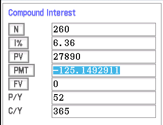 Classpad - Finding of Interest 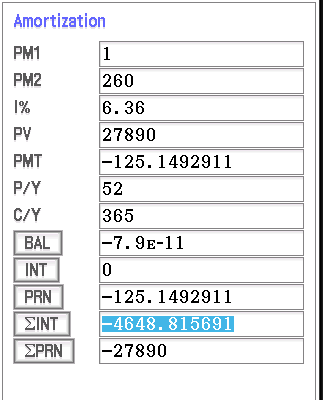
Heritage (7.04%) 2019 Holden Trax
= \2394.74\text{Repayments}=$58.45 \text{ Per Week}2394.74+12800\boxed{$15194.74}2394.74 \div 12800 = 0.187089 = \boxed{18.71%}$ of Car's value paid in InterestClasspad - Working out Payments 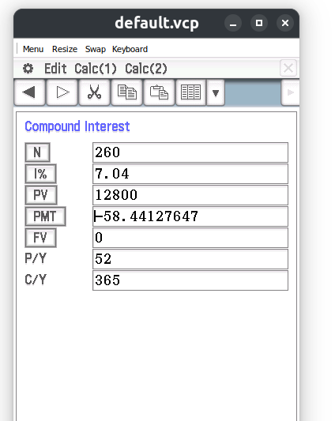 Classpad - Finding of Interest 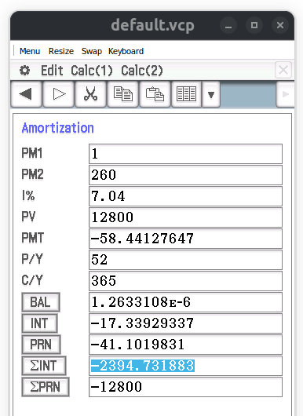
BB-LRL (8.27%) 2015 Suzuki Swift GL
= \2417.38\text{Repayments}=$51.57 \text{ Per Week}2417.38+10990\boxed{$13407.38}2417.38 \div 10990 = 0.21996 = \boxed{22.00%}$ of Car's value is paid in Interest.Classpad - Working out Payments 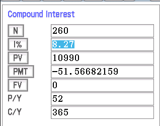 Classpad - Finding of Interest 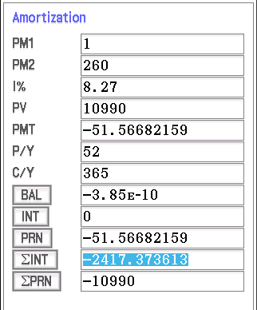
Given the results above, there is a clear positive relationship between the value/!age (youth) of the car, and the proportion of it’s value that you will have to pay back extra as Interest. The best Interest-wise deal appears to be the most expensive car, with the lowest I.R you pay back the least of it’s actual value as Interest, however it’s repayments are more than double that of the mid-range car at $125.15, and alongside that the Interest Paid is double that off the mid-range. The difference in the Interest Rate between it & the mid-range is only , and the Car to Value Ratio difference, which takes into account the car’s value in relation to the interest paid for these cars specifically is \color{blue}(0.1871-0.1667\color{}) between them. The Mid-range Car (Holden Trax) with Heritage seems to be the most appealing/realistic, it is only \58.45$ Per Week in repayments, while being only 4 Years old in contrast to 8 Years like the Suzuki.
Ontop of that, comapring it to the cheapest car, the Suzuki, it accumulates less total interest despite having a higher Principal. Comparatively, you pay back \boxed{3.27\%} =$$(0.22-0.1871) less of the cars value of as interest, “saving” around \418.56$ in Interest. That’s enough to cover the entire Licensing Duty & License Transfer Fee.
Finally, the Low-range car, This one offers the cheapest repayments, at only \51.5722%3.29%5.33%\boxed{$1810}=(12800-10990)$181030,000** loan over 5 Years, the estimated loan is likely to become slightly more inaccurate the further you stray away from $30,000 Though this shouldn’t have too much of an impact.
Variable Interest Loans
NAB offers a Variable Interest Loan who’s comparison rate ranges from 7.91% to 20.83%, we make the generous assumption that a University Student is able to get a loan in the average between these two values ), and that Interest Rates decline from their current peak of that they achieved, and maintained since June, causing this variable interest rate loan to hit it’s best potential rate of 7.91% within a years time. I estimate a year since the RBA was able to get the Cash Rate up to it’s current value in a little over a year, thus, it’d likely take a similar amount of time to reduce them back to if they were to decrease them now. 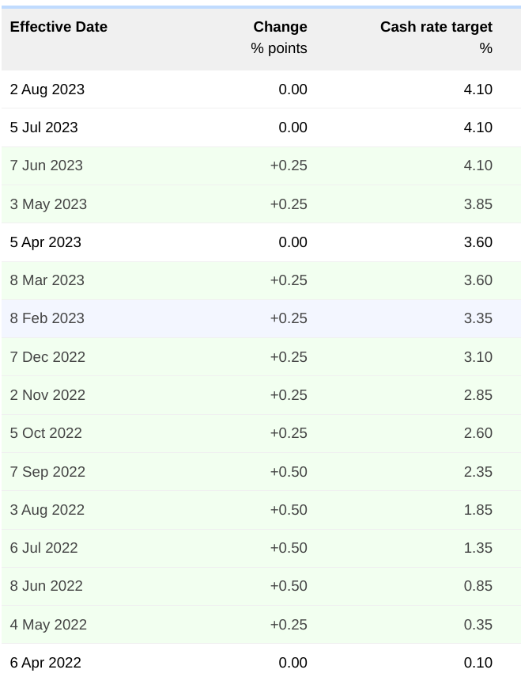
I’ll use the Holden Trax as my example car, as the Loan has a Vehicle Age Limit of 7 Years, thus the Suzuki is not Eligible.
Once running the;
Classpad Calculations
We first calculate the payments, as if this where a regular loan. 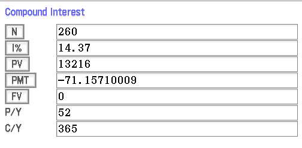 Then find the of Interest payed that year, as well as the balance at that point. 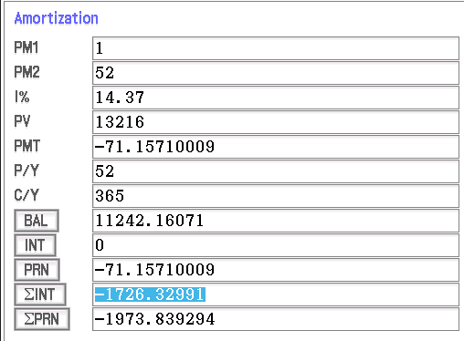
We then take the and use it as the new value to calculate new Repayments 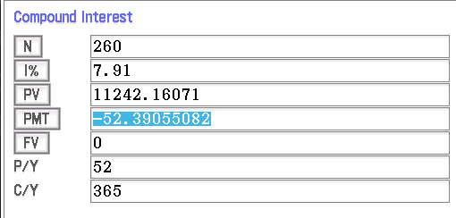 And then use Amortisation; 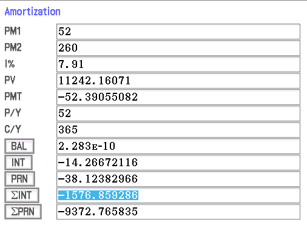
Thus,
We get \boxed{\color{green}\3303.19}$ as the total Interest accrued, this is;
- Still more Interest than the Holden Trax with Heritage Bank, which works out to \color{green}\2451.34$ in a year.
- Not Guarranteed, this only works out if the RBA drastically dropped interest rates harder than it has ever done before, and that it would do so starting right now.
Thus, the Variable Rate loan is not going to be considered as even if unknwon variables outside of our control go perfectly in our favour in a historically unprecedentated fashion, we still work out to a loan that has a higher minimum rate than others we can get with lower rates that are guarrenteed to stay that way. By choosing a fixed loan instead, even in today’s high interest rate environment, we can state the price of the money we’re borrowing, and plan around that without the possibility of change. (Interest Rates represent the price of borrowing money)
Reducing Balance Depreciation
Since Car Depreciation is atleast partly specualitive, meaning that if it is not already documented, we must look into a broad array of past pricing statistics to find a reliable depreciation rate for the particular model, I’ve opted to use this website, It offers a generalisation that should hold true for most cars on average. It states that cars depreciate their value at a rate of 25% within the first year, after that point they lose 14.5% of their value per-year on average. With this in-mind, we can utilise a geometric sequence to calculate the per-year reducing balance depreciation, often referred to as Diminishing Value Depreciation. If It is more than one year old;
If it is less than one year old (brand new)
Where; = Purchase Price of the Car =
Total Remaining Value
Kia Cerato =\color{green}\boxed{\7994.29}\color{red} -19,895.71\text{Retained } {7994.29 \div 27890 =}\boxed{28.66%} \text{ of Value}$)
Holden Trax =\color{green}\boxed{\4891.93}\color{red} -7908.07\text{Retained } {4891.93 \div 12800 =}\boxed{38.2182%} \text{ of Value}$)
Suzuki Swift =\color{green}\boxed{\4200.18}\color{red} -6789.82\text{Retained } 4200.18 \div 10990 = \boxed{38.218198%} \text{ of Value}$)
Classpad Working Out
Kia Cerato
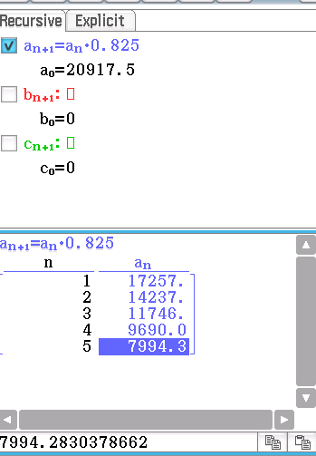
Holden Trax
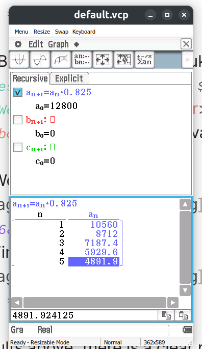
Suzuki Swift
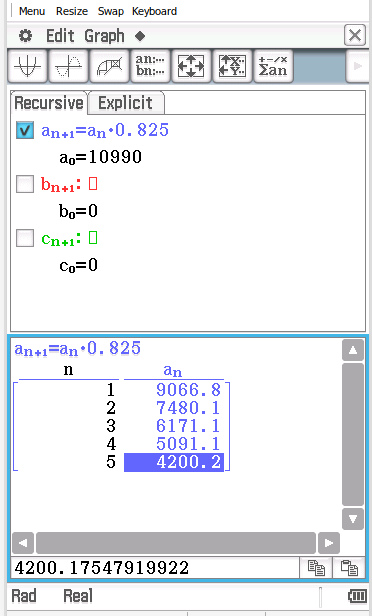
Unsurprisingly, The Kia Cerato fairs the worst at retaining it’s value, since it has to endure the higher Initial purcahse depreciation. (often referred to as the value lost after driving off the lot) Thus second-hand / older cars who have already been through this fair a lot better in terms of retaining value after the 5 year period is up. This is important as it puts the Second-hand cars in a much better position for being sold. After we finish paying off the loan, we can get a more significant portion of the original loan payment back by selling the vehicle;
Excess
| Vehicle | Bank | Total Loan Cost | Remaining Book Value | T.L.C After Car Sold | Vehicle Value at Purchase |
|---|---|---|---|---|---|
| Kia Cerato | Beyond Bank (S.O) | \32738.82$ | \color{green}\7994.29$ | $27,890 | |
| Holden Trax | Heritage Bank | \15194.74$ | \color{green}\4891.93$ | $12,800 | |
| Suzuki Swift | Beyond Bank (L.R.L) | \13407.38$ | \color{green}\4200.18$ | $10,990 |
After Depreciation, despite whichever one you sell, your Net Expenses, that is, the money paid for the overall loan & it’s Interest, is offset by the sale of the Car at it’s estimated 5 Year Book Value, such that you actually pay less than the Original Value of the Car over that 5 Years. This means that there is an excess, not only is the Interest offset by the sale of the car, some of the original, already paid-off loan is also offset, sort of like a bit of your loan payment you get back after selling the car.
I could get the Holden Trax with Heritage, paying \58.45(12800-10302.81)=\boxed{2497.19}$ excess at the end of it. We Achieve this value by taking the original value of the vehicle from the Total Loan Cost After Car Sold (T.L.C After Car Sold), which includes all the accumulated interest. if this value is not negative, that means that the T.L.C After Car sold is lower than the value of the car itself, meaning the sale of the car produces an overall excess.
instead of the Holden Trax I could get the Suzuki Swift GL, going for \51.5710990-9207.2=\boxed{$1782.8}\boxed{$714.39}\boxed{$6.88 \text{ Per Week}}=($58.45-$51.57)\boxed{$1788.8}=(6.88 \times 52)$10990$2789027890 - 24744.53 =\boxed{$3145.47}10990-9207.2=\boxed{$1782.8}125.15 - 51.57 = \boxed{$73.58 \text{ Per Week}}3145.47-1782.8=\boxed{$1362.67}$73.58 \times 260 = \boxed{\color{green}$19130.80}$
Fuel Economy
The Fuel economy will have a significant impact on my living costs. Choosing a more efficient car will reduce my overall petrol payments significantly over the 5 year period, possibly enough to justify a more expensive car over the 5 year period.
| Car | Fuel Economy (Litres per 100km) | Avg. | Source |
|---|---|---|---|
| Kia Cerato | 6.8-7.4L | 7.1L | Carsguide |
| Mitsubishi | 6.7L | 6.7 | CarsGuide |
| Suzuki Swift | 4.6-6.1L | 5.35 | CarsGuide |
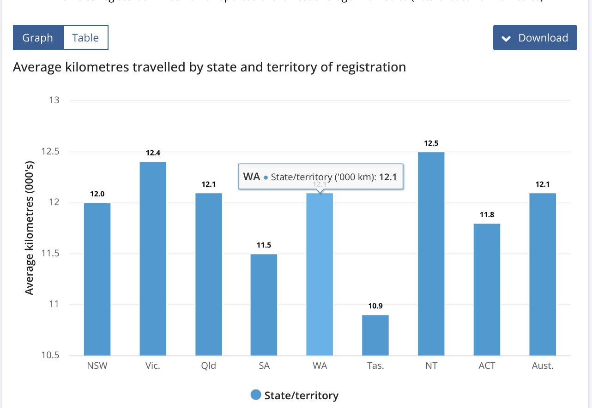 Western Australians usually drive 12,100Km every year. Fuel prices are also on average, 1.93/L. This equation tells us the Yearly fuel cost with each car, dependant on it’s fuel economy that we found above. Thus; 1658.07 \div 52 = \color{green}\boxed{$31.89 \text{ Per Week}}
The Suzuki Swift has the best Fuel Economy out of any of them, only costing \color{green}\24.02 \text{ Per Week}$ in fuel expenses, thus we can take that out of the Weekly Expenses.
Weekly Expenses: 244.02
Archive
| Year (Y) | Weekly Income ($AU) |
|---|---|
| 1 | \483.83 - 24.02 = \boxed{459.81}$ |
| 2 | \433.64 - 24.02 = \boxed{409.62}$ |
| 3 | \457.171 - 24.02 = \boxed{433.151}$ |
| 4 | \481.549 - 24.02 = \boxed{457.529}$ |
| 5 | \506.804 - 24.02 = \boxed{482.784}$ |
Onetime and Yearly Expenses
Car Servicing
The yellow pages estimates that Car Services in WA cost around \320\color{red}$640 \text{ Per Year}$.
Insurance
Insurance plays a big part of the expensives involved in owning a car, Uni students are the most disadvantaged in pretty much all the areas relevant according to a variety of sources;
-
Driving Record
Little Record, Can not determine skill, therefore higher rates -
How much you drive
Everyday, though likely not too much of an increase on rates compared to average. -
Age
Young, “Inexperienced Driver”, increases rates -
Living Location
Shouldn’t be too much of a factor here. -
Gender
Apparently young males are 3 times more likely to get into accidents? -
Marital Status
Likely increases rates by not being married -
Credit History
Little to no credit history, this is likely the first loan, therefore higher rates -
Make & Model of car (src)
- Engine Size
- Theft Rate
- Vehicle Cost
In order to get a rough estimate of Insurance rates, I will reference comparethemarket’s average rates based on different circumstances, I can then average those relevant to my conditions to arrive closer to a representative average, rather than trying to get a quote manually.
Since the source website states; "`This is largely due to younger men having higher car insurance premiums than women of the same age.`" Then stating; `When all ages are taken together, the average cost is much closer between the two genders.` I have opted to multiply the $Male$ Factor by $1.7$ since I fill both criteria, and in a actual scenario would not have my premium drawn down as they suggest from the quotes above.
One-time Expenses
Licensing / Stamp Duty
Stamp Duty stipulates that so long as the Dutaible value is <\25,0002.75%$ of the “Dutiable” value, that being the value of the vehice. is to be paid as Stamp Duty, according to one of these relevant Formula.
Where; S = Stamp Duty = Dutiable Value
If the Dutiable value is greater than \25,000$ then this alternative formula should be used
Where; S = Stamp Duty = = Dutiable Value Over R_%3%$
| Car | Stamp Duty |
|---|---|
| Kia Cerato | \886.90$ |
| Holden Trax | \352$ |
| Suzuki Swift | \302.20$ |
License Transfer
License Transfer is a flat fee of \20.40$ in Western Australia according to the (unfortunately named) Fee Finder. It does not apply to brand-new cars from the dealership
| Car | License Transfer Fee |
|---|---|
| Kia Cerato | Not Applicable |
| Holden Trax | \20.40$ |
| Suzuki Swift | \20.40$ |
Conclusion
In Conclusion, I choose the Suzuki Swift GL, Throughout my analysis in this report it is evident that it is the best option. As one of my initial predictions suggested, The lower accumulation on a older, but cheaper car outweighed the much higher Interest Rate. As stated in Comparing Total Accumulation, the Suzuki Swift alongside the Beyond Bank Low Rate Loan had the worst Interest Rate among our best candidates. This meant that it would require the highest proportion of Interest Paid to Car Value, and despite being the smallest Principal-wise, it still beat-out the Holden Trax in-terms of accrued Interest, this seemed pretty bad at first, though it still did manage to come out to having the lowest repayments at \51.57 \text{ Per Week}, and was only [[#fuel-economy|24.02]] Per week in Fuel Costs, which is significantly better than even the Holden Trax which is almost tied to the Kia Cerato at 13,407.38, a whole 4891.93 at the end, where as the Suzuki comes in at 4200.18, meaning a difference of only 691.75 at sale time compared to the $1810 difference at purchase time. As Discussed in The Excess Section, I am also advantaged in buying the Suzuki as that money that is being wasted on a car can instead be utilised elsewhere, such as a saving account that accumulates interest reliabley, or a investment. Thus, I have decided to choose the Suzuki Swift and alongside it, the lowest Interest Rate available for it, the Beyond Bank Low Rate Loan.
Total Expenses: 295.59=(244.02+51.57)
The Final Disposible Income
I can now apply my formula from the beginning since I have now chosen a loan and got the relevant data to determine disposable income. This will allow me to determine my remaining Income.
And;
| Year (Y) | Weekly Pre-tax ($AU) | Yearly Income | Yearly Income Yearly Taxed & Some Expenses | ||
|---|---|---|---|---|---|
| 1 | \703.83$ | Y_{\text{Yearly}} = \36599.16$ | |||
| 2 | \653.64$ | Y_{\text{Yearly}} = \33989.28$ | |||
| 3 | \677.171$ | Y_{\text{Yearly}}=\35212.89$ | |||
| 4 | \701.549$ | ||||
| 5 | {\726.804}$ |
| Year | Yearly Income Post Tax |
|---|---|
| 1 | $19204.57 |
| 2 | $16881.77 |
| 3 | $17970.79 |
| 4 | $19099.00 |
| 5 | $20267.80 |
Now we must remove the expenses that are not expressed as Weekly. We could’ve appended them onto the end of the equation above, however it was already too cluttered as it is so I’ve elected to seperate it out into it’s own table.
| Expenses (Non-Weekly, Expressed Yearly) | Cost ($AU) |
|---|---|
| License Transfer Fee (First Year Only) | 20.40 |
| Stamp Duty (First Year Only) | 302.20 |
| Car Service/Maintenance | 640 |
| Insurance | 1622.04 |
| Year | Final Income |
|---|---|
| 1 | \color{green}\boxed{\16619.93}19204.5720.40+302.20+ (-640) + (-1622.04)$ |
| 2 | \color{green}\boxed{\14619.73}=16881.77 + (-640) + (-1622.04)$ |
| 3 | \color{green}\boxed{\15708.75}=$17970.79 + (-640) + (-1622.04)$ |
| 4 | \color{green}\boxed{\16836.96}=$19099.00 + (-640) + (-1622.04)$ |
| 5 | \color{green}\boxed{\18005.76}=$20267.80 + (-640) + (-1622.04)$ |
And the numbers in are the final value for all left over disposable income. That includes expenses paid in for the Loan itself, the cost of ownership for the car, and other related ammenities. In actuality the money at the end of the year would end up looking vastly different as a Uni student would likely burn through this excess due to how conservative the living estimates were. However, it shows that we can comfortably cover all needed costs in this timeframe.
Archive
| Year (Y) | Weekly Inc. Incl. Weekly Expenses($AU) |
|---|---|
| 1 | |
| 2 | = |
| 3 | = |
| 4 | = |
| 5 | = |
Total Expenses: 295.59=(244.02+51.57)
| Year | Yearly Income | After-tax |
|---|---|---|
| 1 | 18,643.84 | |
| 2 | 16356.56 | |
| 3 | 17,580.12 | |
| 4 | 18,847.36 | |
| 5 | 20,160.88 |
Non-Linked References
Most of my references where embedded in the [relevant text like this]
These were not;
Citations with a list symbol next to them have additional context that can be viewed by expanding them (clicking on them)
Quote Kia Cerato Source
Example 2019 Holden Trax Source
(Incl. Transfer + Registration Fees)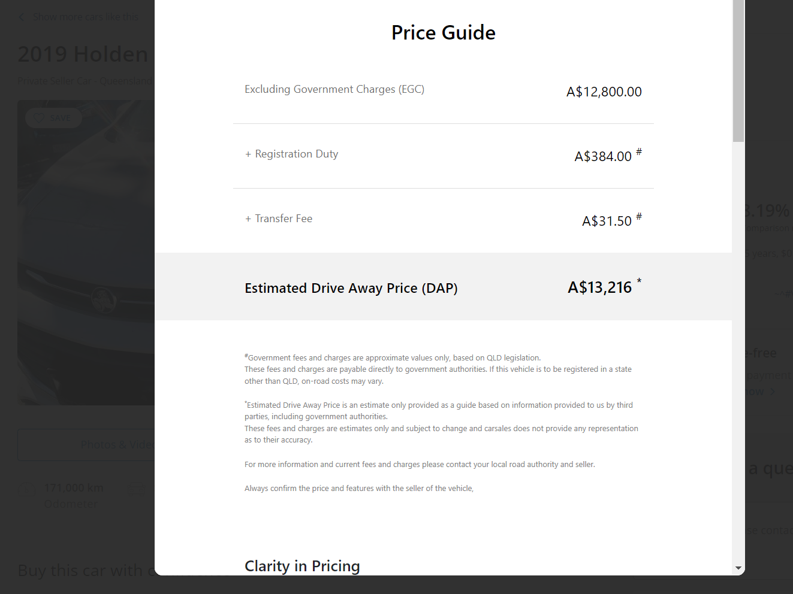
Example 2022 MG3 Core Auto
(Incl. Transfer + Registration Fees)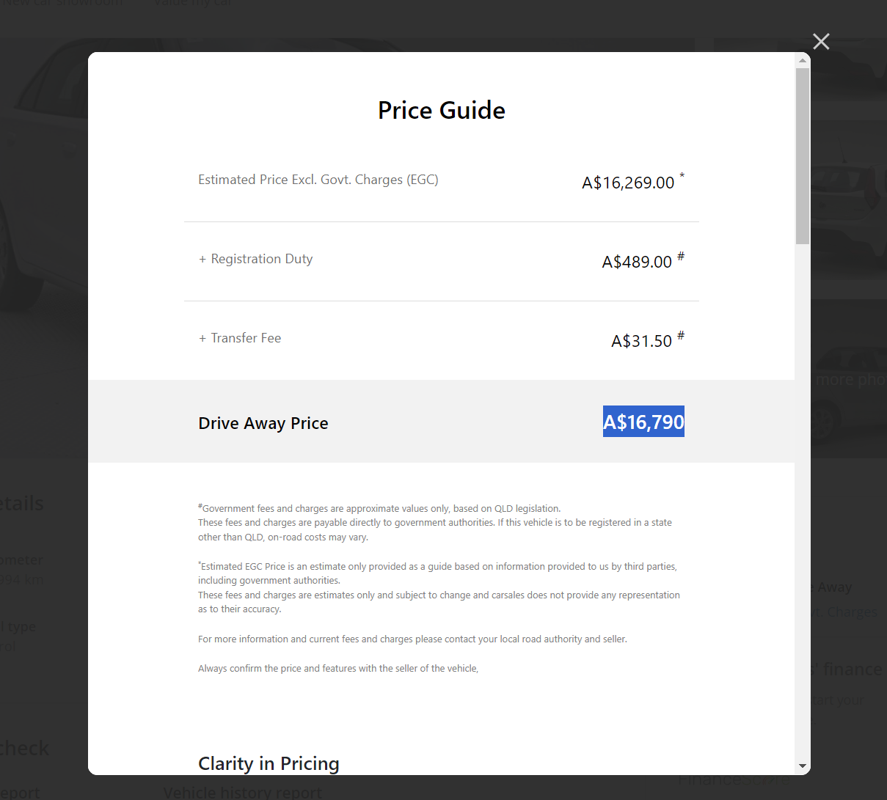
2015 Suzuki Swift GL (Now Sold)
Bank Sources
Beyond Bank (LRL): https://www.beyondbank.com.au/personal-banking/car-loans-personal-loans/car-loans/low-rate-car-loan.html Beyond Bank (SO): Promo Site Heritage: https://www.heritage.com.au/loans/personal-loans/car-loan Westpac: https://www.westpac.com.au/personal-banking/personal-loans/car-loan/ [contract](https://www.westpac.com.au/content/dam/public/wbc/documents/pdf/pb/personal-loans/p-l-contract-general-conditions.pdf Commbank: source Bankwest: source